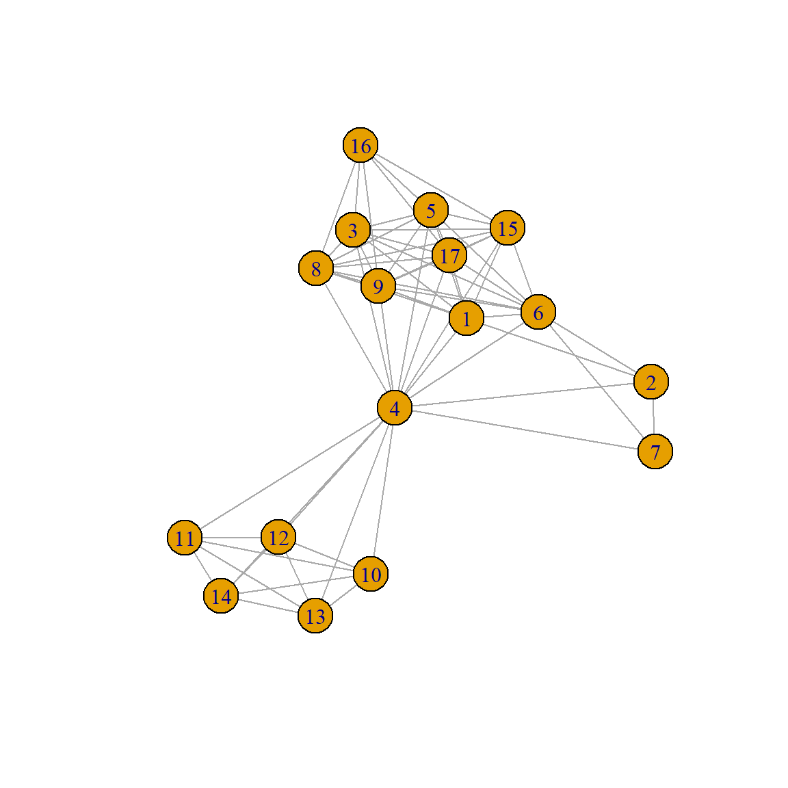
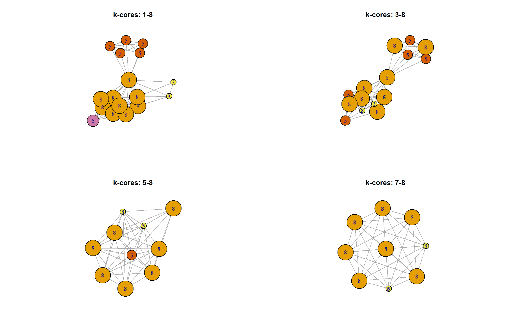
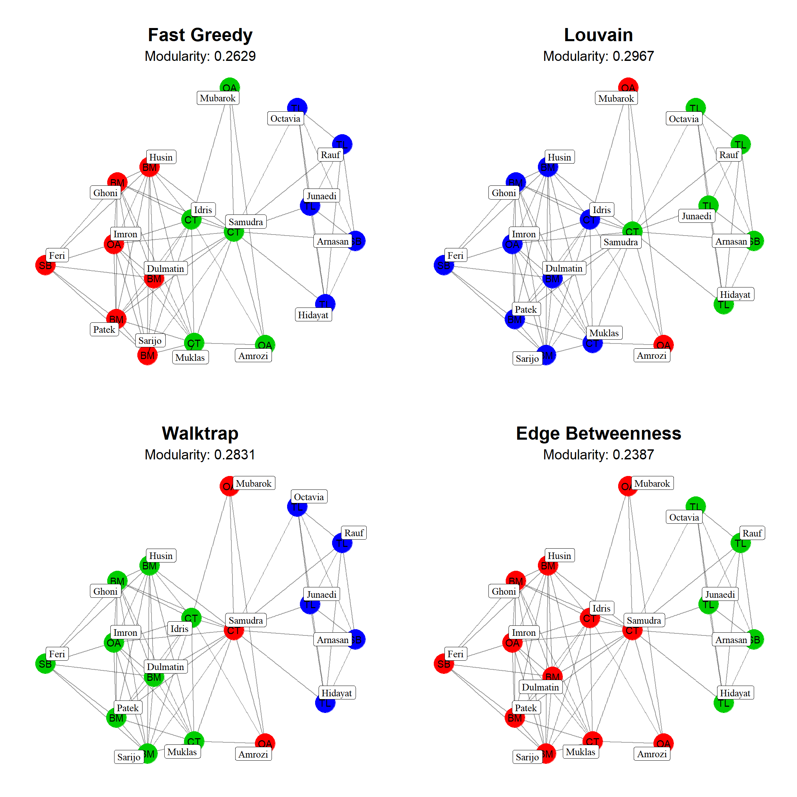

In this chapter we are going to use the Bali dataset from the UserNetR package, which as mentioned in its description, “shows the interactions among the Jemaah Islamiyah terrorist group that carried the bombings in Bali in 2002”, whose basic plot is

note that the network has some interesting vertex attributes that will be used later, as the name and the role of each terrorist.
## [1] "na" "role" "vertex.names"In this chapter we deal with the groups that exist in any complex system. Due to the own properties of a network, there will be cases in which there are structures in it that may somehow force these groups to exist, for example, departments in a university, areas in a firm, class groups in a univerity and so on. However, even in these cases there may exist som underlying structures we are unaware of and finding them is useful to determine the organization of the network.
The determination of these groups allow us to break down the network into smaller systems of manageable size which may be later analysed individually.
In network science a community is a group of nodes that have a higher likelihood of connecting each other than with any other member of other community. In this definition we may usually consider the number of nodes as an indicative of the community. However, it is quite open and gives a first hint of the problems we will find in detecting the communities: what is many or few nodes? What is a higher likelihood exactly meaning?
As Newman puts it, to turn community detection into a quantitative problem we have to assign numbers to these concepts. Then let’s begin with some basic assumptions:
These two hypotheses narrow the definition of community and still many different possible definitions still fit. For example, in sociology it is common to use some different approache to a cohesive group. Here we give only two examples
To find the cliques in R we may use cliques. However, if we have a large network, this may not be very interesting. It may be better to use large.cliques and maximal.cliques, then
## [[1]]
## + 9/17 vertices, from 9d26c04:
## [1] 4 6 1 3 5 8 9 15 17it returns that nodes \((1, 3, 4, 6, 8, 15, 17)\) form the largest clique, and that
## [[1]]
## + 6/17 vertices, from 9d26c04:
## [1] 12 4 14 13 11 10
##
## [[2]]
## + 7/17 vertices, from 9d26c04:
## [1] 16 3 17 15 9 8 5
##
## [[3]]
## + 9/17 vertices, from 9d26c04:
## [1] 1 3 17 15 9 8 6 5 4we have, for example, three cliques with at least 6 nodes.
To find this in R let’s create a vertez label for the coreness of the node, then let’s use a discrete palette to color the nodes
coreness <- graph.coreness(Bali_net)
V(Bali_net)$coreness <- coreness
V(Bali_net)$color <- brewer.pal(max(coreness), "Set3")## Warning in vattrs[[name]][index] <- value: number of items to replace is
## not a multiple of replacement lengthWe can now define the \(k\)-cores using the induced.subgraph() function. The graph below shows how we can remove lower k-core nodes from the graph
plot_kcore <- function(x, k){
core <- graph.coreness(x)
plot(induced.subgraph(x,
vids = which(core > k)),
layout = layout.fruchterman.reingold,
vertex.label = core,
vertex.size = core*5,
vertex.color = core + 1)
title(paste0("k-cores: ", k, "-", max(core)))
}
par(mfrow = c(2,2))
cores <- c(1,3,5,7)
sapply(cores, function(x) plot_kcore(Bali_net, x))
## [[1]]
## NULL
##
## [[2]]
## NULL
##
## [[3]]
## NULL
##
## [[4]]
## NULLThe definition above may be a bit too restrictive, then let’s consider a subgraph \(C\) made out of \(N_c\) nodes. We denote as \(k_i^{int}\) the internal degree, the number of links of node \(i\) with the other nodes in \(C\), and as \(k_i^{ext}\) the external degree as the number of links of node \(i\) with the rest of the network.
Then we define a Strong Community as one in which any node in it has more connections with other nodes in the network than with any other node out of it
\[\begin{equation} k_i^{int}(C) > k_i^{ext}(C) \end{equation}\]
We define a Weak Community looking at the overall degree instead of the individual degrees, then this occurs when the total internal degree of the subgraph exceeds its total external degree
\[\begin{equation} \sum_i k_i^{int}(C) > \sum_i k_i^{ext}(C) \end{equation}\]
In this chapter we will only focus in the algorithms of community detection based on the modularity function we defined in the previous chapter
\[\begin{equation} Q = \frac{1}{2L}\sum_{i,j}\left( A_{ij} - \frac{k_ik_j}{2L}\right)\delta_{g_ig_j} \end{equation}\]
where now, the Kronecker delta runs of the community indices. The idea is that by running along all different possible communities to which any node in the network may belong to, we can find the configuration such that modularity is maximized.
However, even considering that we have only two communities, in a network of order \(N\), there are \(2^N\) ways to divide the nodes which implies that even for \(100\) nodes the combinations are \(\sim 10^{30}\).
The problem we face here is that this brute-force attack, as Brandes et al. proved is an NP-complete hard problem. Although this relies on the unproved Millenial Unsolved Problem ($1M as reward for any who solves it)on whether NP problems are P problems, this implies that a solution cannot be verified in polynomial time.
What can we do then? First, details apart, we are interested in cases in which the community structure is clear. If it is difficult to dectect or obscure, in many cases it will not be telling us too much (be careful with this argument since it seems that we may give importance only to the values that we can easily measure!). In this sense, there is a number of different heuristic algorithms that give us an approximate, but acceptable solution.
Now, these methods, which lie in the framework of discrete optimization problems, may return a high modularity value and yet a far from optimal division (search for replica symmetry breaking if you are interested on this point).
In igraph we have a number of different algorithms that can be used to find communities, however, be careful since each of them can be applied under some conditions. In alphabetical order, we can see them in the following table
| Name | Function | Directed | Weighted | Components |
|---|---|---|---|---|
| Edge Betweeness | cluster_edge_bewteeness() |
T | T | T |
| Fast-Greedy | cluster_fast_greedy() |
F | T | T |
| InfoMAP | cluster_infomap() |
T | T | T |
| Label Propagation | cluster_label_prop() |
F | T | F |
| Leading Eigenvector | cluster_leading_eigen() |
F | F | T |
| Louvain | cluster_louvain() |
F | T | T |
| Optimal | cluster_optimal() |
F | T | T |
| Spinglass | cluster_spinglass() |
F | T | F |
| Walktrap | cluster_walktrap() |
F | T | F |
In it we see that only Edge-Bewtweenness and InfoMAP can be used in directed graphs; that only the Leading Eigenvector cannot receive weighted networks and that they perform differently with respect to the number of components.
We are going to use some them for the Bali network and see that each of them produces slightly different results.
plot_communities <- function(graph, alg, title = ""){
clt <- alg(graph)
mod <- modularity(graph, membership(clt))
graph %>%
ggraph(layout = "kk") +
geom_edge_link(alpha = 0.4) +
geom_node_point(size = 10,
color = membership(clt) + 1) +
geom_node_text(aes(label = role)) +
geom_node_label(aes(label = vertex.names),
repel = TRUE,
show.legend = FALSE,
family = "serif") +
labs(title = title, subtitle = paste0("Modularity: ", round(mod, 4))) +
theme_graph(border = FALSE) +
theme(legend.position = "None",
plot.title = element_text(hjust = 0.5, size = 20),
plot.subtitle = element_text(hjust = 0.5, size = 15))
}
a <- plot_communities(Bali_net, cluster_fast_greedy, "Fast Greedy")
b <- plot_communities(Bali_net, cluster_louvain, "Louvain")
c <- plot_communities(Bali_net, cluster_walktrap, "Walktrap")
d <- plot_communities(Bali_net, cluster_edge_betweenness, "Edge Betweenness")
plot_grid(a,b,c,d, nrow = 2)
Given the importance of modularity in networks, we should be aware of some limitations it has:
\[\begin{equation} k\leq \sqrt{2L} \end{equation}\]
the modularity will always increase if these communities are grouped into one single community even if we knew that they are different. This gives us a resolution limit, since modularity maximization cannot detect communities whose degree satisfies the previous relation.